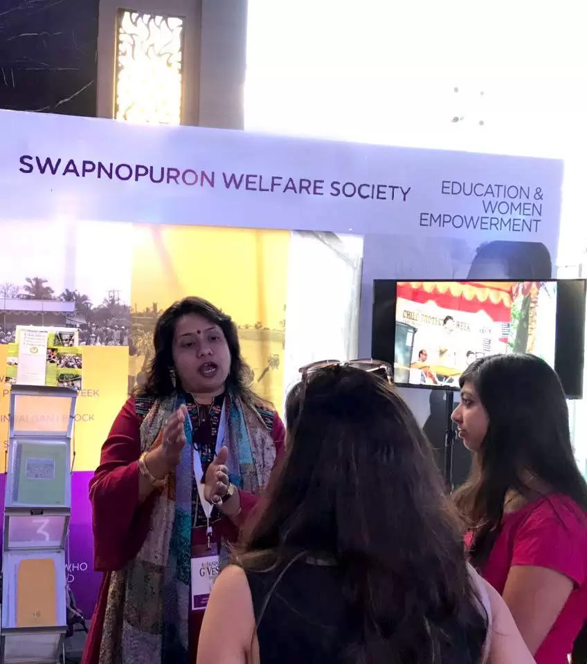

While we are trying our best to bring about positive changes in and around the Sunderban regions of
Hingalgunj, we need support and more resources. If you are a student, academician, researcher or volunteer
group who have an interest in the areas of education, child protection, maternal care and support, child
health & nutrition issues, adolescent issues, we would be happy to have you onboard our internship and
volunteering programs. You will receive a unique opportunity of working closely with the most impoverished
rural communities of our country, living on the riverine islands of North 24 Parganas Sunderbans.
We also encourage you to share your knowledge and skills in areas such as documentation, data analysis,
action research, proposal development, awareness campaigns & on-field action support. Through this knowledge
transfer process, you will be able to provide a livelihood to the people who are in dire need of one.
Additionally, we encourage you to organise and participate in various fundraising activities for Swapnopuron
even after your internship is over.
Interested students/volunteers are requested to send a letter of intent from their concerned
institutions/self along with their CV & scanned valid Photo ID to the Secretary of Swapnopuron stating
the purpose and duration of the proposed internship/volunteering at least 30 days in advance.
We encourage you to take part in an internship for at least a month. You also have the option of
extending your internship up to 6 months. It will depend on the requirement and decision of the
Organisation.

Accommodation-food-local travel
If you are applying for an internship in Swapnopuron, you would be required to arrange and pay for your
accommodation, food, and local travel during the internship. Swapnopuron may facilitate arranging
suitable
accommodation for the interns; however, in such a scenario, you are expected to make the required
payment.
Facilitation Charges
Considering the time involvement of Swapnopuron team members in organising and facilitating the
internship/volunteering programme, you will be required to deposit an amount of Rs. 1000/- per month to
Swapnopuron. This amount is to be deposited at the beginning of the internship/volunteering, and a
receipt
has to be collected from the finance section of the Swapnopuron office.
Certification
We will issue certificates of recognition for your participation and contribution during your
internship.
Please download the application form, fill it up and send it to the email address along with all
required
documents.